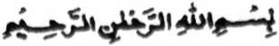
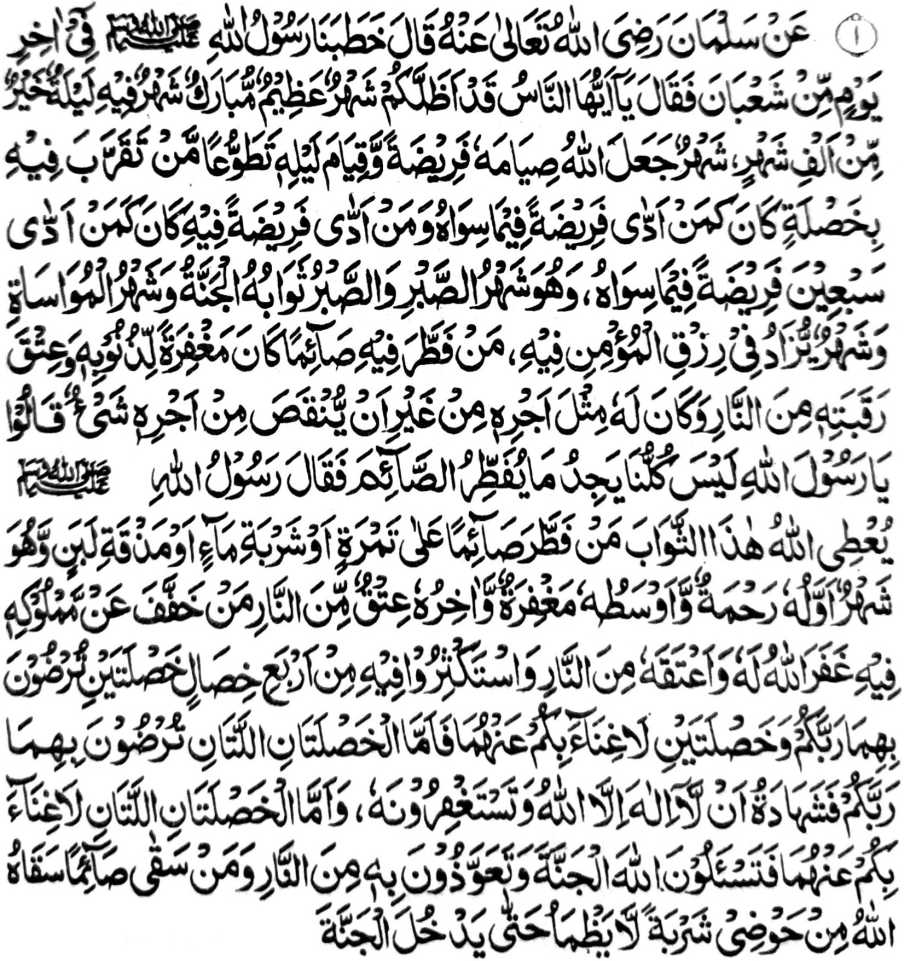
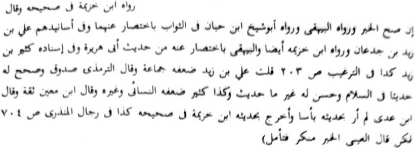

PINTO -1
SO MANGA KALBIHAN AGO BALAS O KAPHOWASA
‘Hadith 1


"Miyakathitayan ko Salman (Radhiallaho 'Anho) a pitharo iyan a piyangoteba-an kami o Rasulollah (Sallallaho 'Alaihi Wasallam) si-i ko mori a gawi-i ko Sha'ban na miyatharo iyan: ‘Hay manga tao! Sabenar a miyakatalingoma rekano so olan-olan a lebi a mala ago babarakaten; olan-olan a ndodon so satiman a kagagawi-i a tomo a di so sanggibo a olan-olan; olan-olan a biyaloy o Allah (Subhaanaho Wa Ta'ala) a paliyogat so kaphowasa-i [ko manga kadaandao] ron, go [biyaloy Niyan] so kapanambayang [sa Taraweeh] ko manga kagagawi-i ron a Sunnat. Sa tao a [panagontamanan niyan so] kapakarani [ko Kadenan niyan] si-i sangka-iya olan-olan a nggolalan ko kapenggalebek iyan sa Sunnat na lagid o ba miyakanggalebek sa faralo ko ped a olan-olan a salakao rekaniyan [a Ramadhan], go sa tao a makanggalebek sa satiman a faralo [a simba] si-i sangkanan a olan-olan na lagid o miyakanggalebek sa pito-polo a faralo ko salakao a olan-olan. Sekaniyan so olan-olan a kazabar na aya balas o kasabar na so Sorga, go giya-i so olan-olan a kakhalimo-ai go olan-olan a pephagomananon non so Rizqi ko Mo'min. Sa tao a pakaken niyan so gi-i phowasa [ko oriyan o kasedep o alongan] na rila-an so manga dosa niyan go makalidas sekaniyan ko Apoy [ko Naraka], go khabaloy a bagi-an niyan so balas a lagid o balas a khakowa niyan [a piyakakan] ko kiyathiger iyan, sa, daden a ba khalebat ko balas iyan [a piyakakan]'. Pitharo iran [a manga Sahabah]. 'Ya Rasulollah (Sallallaho 'Alaihi Wasallam)! Kena ba kami langon phakagaga sa kapakakan nami ko manga pephamowasa.' Na pitharo o Rasulollah (Sallallaho 'Alaihi Wasallam), 'Imbegay o Allah (Subhaanaho Wa Ta'ala) angkanan a balas ko tao a mapakakan niyan so gi-i phowasa sa apiya satiman bo a korma o di na mapaka-inom iyan sa ig o di na maito bo a gatas. Sekaniyan so olan-olan a so paganay ron na Rahmat [limo], na so lo-ok iyan na Maghfirah [rila] na so kaposan niyan na kapalidas ko Apoy [ko Naraka]. Sa tao a pakakhapan niyan sa galebek so oripen niyan sangka-iya a olan-olan na rila-an rekaniyan o Allah (Subhaanaho Wa Ta'ala) so manga dosa niyan go pakalidasen Niyan sekaniyan ko Apoy [ko Naraka]. Pakandakela niyo si-i rekaniyan [a olan-olan] so pat a galebek: so dowa si-i kiran na ikhaso-at rekano o Kadenan niyo go so dowa kiran na di niyo mipendarainon. So dowa a ikhaso-at o Kadenan niyo na so [kapakadakela niyo ko] Laa Ilaaha Illallah go so Istighfar [kapangeni sa rila] si-i Rekaniyan. So peman so dowa a di niyo mipendarainon na so kapamangeniya niyo ko Allah (Subhaanaho Wa Ta’ala) ko [kapakasoled sa] Sorga ago so kaphelindong iyo Ron ko Apoy. Sa tao a paka-inomen niyan so gi-i phowasa [ko kasedep o alongan] na paka-inomen sekaniyan o Allah (Subhaanaho Wa Ta'ala) ko paridi aken [a At-Kauthar] a sa tao a maka-inomon na diden mawaw taman sa kapakasoled iyan sa Sorga." [Piyanothol o 'Ibn Khuzaimah’ si-i ko Sahih iyan]
OSAYAN
Langon o manga bandingan a rininayag angka-iya a Hadith na madakel a kiyaosayan non sa manga ped a Hadith pantag ko kalbihan o Ramadhan. Malo den madakel a manga ala-i gona a bandingan a piyaki-ilay reketano sangka-iya a Hadith.
Paganay ron na kiyatokawan tano a so Rasulollah (Sallallaho Alaihi Wasallam) na inipangoteba niyan angka-i ko kaposan o Sha’baan, sa aya marayag a sabap na aya antap iyan non na thago-on niyan ko manga pamikiran tano so kala-i kipantag angka-iya [phakatalingoma] Ramadhan, ka so seketano ron na an tano katatademi ago da a maito bo a masa a somagad a di tano kabegan sa kipantag. Si-i ko oriyan o kiniropa-an niyan ko manga kalbihan angka-iya olan-olan, na so inengka na biyangkiring ko manga ala-i gona a nganin. Paganay na so ‘Laylatul Qadr’ a titho den a mala-i kipantag a gagawi-i. Oriyan noto, na inaloy sangka-iya a Hadith a so kaphowasa ko kadaon-dao na inipaliyogat o Allah (Subhaanaho Wa Ta’ala), a Sekaniyan so biyaloy niyan sa Sambayang a ‘Taraweeh’ ko kagagawi-i a Sunnat a ipezoa-soat ko Allah (Subhaanaho Wa Ta’ala). Pho-on sangka-iya a Hadith na siyaboton a so kinisogo-on ko kazambayang sa Taraweeh na si-i den miyakapo-on ko Allah (Subhaanaho Wa Ta ala), na si-i ko manga ped a Hadith o Nabi (Sallallaho Alaihi Wasallam) na mata-an a miyakabager ron. So langon o manga ‘Ulama na kiyaopakatan kiran so kababaloy o Taraweeh a Sunnat. So Maulana Shah Abdul-Haq Dehlawi na inisorat iyan ko kitab iyan a ‘Maa Thabata Bis Sunnah' a amay ka so manga tao ko satiman a inged a di ran mitindeg so Sambayang a Taraweeh, na so dato a Muslim na khitegel iyan kiran (o di na mikithidawa si-i kiran).
Si-i na satiman a bandingan a khatanodan: Madakel a aya kepit iran non na so tao na khapakay a giyabo a kapephamamakinega niyan ko Qur'an a pembatiya-an igira Sambayang a Taraweeh ko soled o walo gawi-i o di na sapolo gawi-i ko satiman a Masjid, sabap san na miyakowa so kalbihan angka-iya a Sunnah. Giyangka-i na ribat [a pamikiran] sabap sa dowa a mbida a nganin paganay ron na Sunnah so kapamakinega ko kapethamata ko Qur’an a pembatiya-an ko Taraweeh igira Ramadhan; ika dowa, na Sunnah so kipamayandegen ko Sambayang a Taraweeh ko tenday o Ramadhan. Giyangka-iya dowa na ipenggolalan sa mala-a siyap.
So peman so siran a zisi-i sa lakawan a da iran minggolalan angka-iya a dowa Sunnah, sabap ko diran katawi o anda siran khapantagi, na taralebi kiran a si-i ko da mapira gawi-i ko paganay ko Ramadhan na matamat iran so Qur'an ko Sambayang a Taraweeh, ka aden di khatatap a da matarotop [si-i kiran so kiyatamata ko Qur’an sangkoto a Ramadhan]. Igira aden a kakhaparo niyan [sangkoto a gi-i ran kandalakao] a maka-ilay siran sa pezambayang sa Taraweeh na panagontamani iran a kapakaped iran non.
Isa pen a zaboten a miya-ilay tano sangkanan a Hadith na so Rasulollah (Sallallaho ‘Alaihi Wasallam) na piyakitokawan niyan reketano a so Nafl [kena ba faralo] a simba ko Ramadhan na mbalasan sa lagid o Fardh (paliyogat) a simba ko kalilid a masa, na so Fardh ko Ramadhan na maka-aawid sa balas a pito polo takep a timbang iyan ko Fardh ko salakao a masa.
Sangka-iya a masa, na pamimikiranen tano so gi-i tano kapagamal, anda tamani katatago-i tano sa kipantag ko manga paliyogat a simba si-i ko Ramadhan go ay kala a Nafl a gi-i tano minggolalan? So peman so Fardh a simba na pekha-ilay tano so kadakelan a, oriyan o kapakakan niran ko ipopowasa na komiyasoy siran makatorog, sa aya miyanggola-ola na da siran makazambayang sa Sobo. Aden kiran a gi-i makazambayang [sa Sobo] ogaid na kena ba barajoma. Miyakabetho sa korang so panalamat tano ko Allah (Subhaanaho Wa Ta’ala) sangkoto a pangenengken a miyakan tano kagiya ko ipopowasa sabap ko da tano kinggolalanen ko pithamanan a mala-i gona a Fardh, ago apiya minggolalan tano na kena ba barajoma. So Rasulollah (Sallallaho ‘Alaihi Wasallam) na miyatharo iyan, “Da a Sambayang o siran a mababaling ko obay o Masjid inonta si-i sa Masjid.”
Si-i ko kitab a ‘Mazaahirol Haq’ na miyato-on non a amay ka so tao a da-a a mala a sabap, na Zambayang sa Fardh a kena ba barajoma na so Fardh na miya-aros a mininggolalan ogaid na so tarotop a balas o Sambayang na da maparoli. Sakamaoto mambo, a si-i ko kadakelan a gi-i manggola-ola si-i ko kapethangkas, na aya pekhibagak na so Sambayang a Fardh ko Maghrib, go so kadakelan pen a miyakasong sa Masjid [ko oriyan o kapakathangkas] na da iran ra-ota so paganay a Takbeer o di na da iran ra-ota so paganay a Rak’at.
Madakel a tao, a sabap ko kalendo o Sambayang a Taraweeh, na aya pen a ola-ola iran na gi-i siran Zambayang sa Fardh ko Isha a da pen makasoled so wakto niyan. Giyanan-i piyakarata-rata sa ginawa a kasisiyapa tano ko manga simba tano si-i ko Ramadhan! Pekhitoman tano so isa a faralo ogaid na minilebad tano so telo a faralo. Miyakapira tano kasagadi a minindarainon tano so Sambayang ko Lohor sabap ko kinibolog o torog, go miyakapira tano mapakalepas so Sambayang ko ‘Asr sabap ko kiyatembang tano ko kapamamasa-an, o di kaphasa o di na kapanininda-an sa alabat ko kapethangkas tano.
O giyanan-i betad o manga faralo, na malo tano den mipephagarangan so taman a kaito a kipantag a ibebegay tano ko manga Nafl a simba. Pekha-ilay den o isa reketano a sabap ko roparop, na so wakto o Sambayang ko Ishraq (ko oriyan o kasebang o alongan) go so wakto o Sambayang a Dhoha (ko kiporo o alongan) na pezagad den sa daden mazagipa. Ilain tano peman so Salaatul Awwabeen (Sunnat ko oriyan o Maghrib). Sangka-iya a masa na tanto tano a matetembang ko kapekhan tano go ika-awan tano pen so kalendo o Sambayang a Taraweeh ko oriyan o isa ka oras, na minindarainon pen angka-iya a Sambayang [Awwabeen]. Liyo ro-o pen na miya-ilay tano a so Sambayang a Tahajjud [a aya wakto niyan na si-i ko ipopowasa], lagid oto a sabap a mapephakalepas pen. Phipira nggibo den a ipenda-owa o tao sa di niyan kipenggolalanen sangka-iya a Nawafil [manga Nafl], ogaid na pekha-ilay tano bo a madakel a tao a gi-i ran minggolalan langon angka-iya manga Ibaadat si-i sangkoto a manga ala-i kipantag a manga gawi-i.
Saken den-i miyakasaksi ko goro aken a Maulana Khalil Ahmad (Rahmatullahi ‘Alaihi) ko madakel a manga Ramadhan. Tanto sekaniyan a da-a bager iyan, ago balisakiten a minitolod a omor iyan, ogaid na minsan pen giyanan, na pephakabatiya sekaniyan sa isa ago sabagi ko sabagi sa Juz ko Qur’an si-i ko Sambayang iyan a Sunnat ko oriyan o Maghrib. Oriyan noto, na aya ola-ola niyan na isa ka oras ago sabagi a ipekhan niyan ago so manga ped a singanin o ginawa ko kapephagiyasa-i niyan ko Sambayang a Taraweeh. Manga dowa ago sabagi ka oras a ititindeg iyan ko Taraweeh igira zisi-i sekaniyan sa India ago manga telo ka oras igira zisi-i sa Madinah Munawwarah. Oriyan noto, na makatorog sekaniyan sa dowa taman sa telo ka oras [si-i maka-ayon ko mosim]. Oriyan niyan na batiya-an niyan peman so Qur’an ko Sambayang a Tahajjud taman ko baden sabagi sa isa ka oras a lamba-on ko Fajr, ko masa a kakhan niyan ko ipopowasa [‘Sehri’] Ipho-on ro-o taman ko Fajr, na matataman sekaniyan ko kabatiya sa Qur’an o di na pephamatiya sa ‘Wazifas’. Anda den-i kasebang o Fajr, na Zambayang sekaniyan sa Sobo, na oriyan niyan na miyataman sekaniyan peman ko Muraqabah [madalem a kapamimikiran] taman ko Ishraq. Anda den-i kitindegen niyan ko Sambayang sa Ishraq na ipezorat iyan peman so saba-ad ko kiyabantogan a osayan niyan a ‘Badhlul Majhood’ a osayan ko Abu Dawood, taman ko kaotho niyan a alongan; oriyan niyan na so kalalayaman a kapembatiya-a niyan ko manga sorat ton ago gi-i niyan pakizorat so manga sembag iran, oriyan niyan na domekha taman ko wakto a Zuhur go batiya-an niyan so Qur’an ipho-on ko Zuhur na taman ko ‘Asr. Ipho-on sa ‘Asr taman ko Maghrib, na matetembang sekaniyan ko Tasbeeh ago so gi-i niyan kimbitiyara-in ko manga bisita niyan. So kiyapasada niyan ko Badhlul Majhood na si-i sekaniyan peman miyataman ko kapephaganada niyan ko manga ped a manga kitab ko Agama. Giya-i kalalayaman a ola-ola niyan ko tenday o Saragon. Ogaid na igira Ramadhan, na ipheramig iyan so oras iyan ko ‘Ibaadah, go pephamakarawa-an niyan so manga rak’at o Sambayang. So manga ped a manga ala a barasimba na lagidoto mambo a kasisiyapa iran ko Ramadhan, go sobra ro-o pen, sa tanto a maregen o ba ka-iringi. So Shaikhul-Hind Maulana Mahmoodul Hassan (Rahmatullahi ‘Alaihi) na tatap sekaniyan ko Sambayang a Nafl ko oriyan o Taraweeh taman ko wakto a Fajr, go pephamamakineg pen ko kapembatiya sa Qur’an o mbaram-barang a manga Huffaz a gi-i makazosokeli. So Maulana Shah Abdurrahim Raipuri (Rahmatullahi ‘Alaihi) na matataman ko kapembatiya iyan sa Qur’an ko gagawi-i daon-dao ko tenday o Ramadhan. Da den a oras a ba sekaniyan makazorat o di na mazaka-sakao niyan so bisita niyan. So bo so siran a manga komakep iyan-i pephakasongon ko maito a oras ko oriyan o Taraweeh ko masa a kaphaginom iyan sa ti (kapi).
Aya sabap a kiya-aloya ko okit a gi-i ran kanggona-i ko Ramadhan iran angka-iya manga barasimba a manga tao na kena ba giyabo a kapemtetiya-a tano ron [a da-a miyanggona on], ka aya titho a antap na so kapanagombalay reketano o panamar, go an tano masongkad siran ko pithamanan a khagaga tano ron. Anda taman-i kapiya niyan mangaday opama ka so siran a di mapapatong o gi-i kanggiloba-a ko singanin sa donya na ba iran den panamari ko taman a khagaga iran a pakatiyolinen niran so kapephaginetao iran sangka-iya a saolan [a Ramadhan], ko oriyan o kiya-ilanga iran ko sapolo ago isa olan-olan ko saragon. So siran peman a gi-i magopisina a gi-i pho-on ko manga alas otso, o di na alas noibi o di na alas dis sa kapipita, na antona-ai maregen non opama ka siran, na nggona-i ran so oras iran ko pageletan o Fajr ago so kazoled iran sa galebekan sa kabatiya-a iran non ko Qur’an apiya si-i bo sangka-iya Ramadhan. Igira bo a so manga singanin ko kadodoniya-i na pekhasenggayan tano den sa oras minsan pen gi-i tano magopisina. So siran peman a manga taribasok, a aya den a kalilid na ayabo a sasakodowan niran na so manga ginawa iran, na daden a phakaren kiran sa kambatiya-a iran ko Qur’an si-i ko masa a katatago iran ko galebekan niran. Oriyan noto a ilaya niyo so manga padagang, go so thitinda ago so manga ala a padagang. Da a phakaren kiran igira Ramadhan sa kambatiya-a iran ko Qur’an ko masa a gi-i ran kandagang, o di na malo iran kenetan so oras iran sa kandagang sa misenggay ran a ibatiya iran non. Salakao ro-o na tanto a mala a khampetan o Ramadhan ago so kabatiya sa Qur'an. Kadakelan o manga Kitab o Allah (Subhaanaho Wa Ta'ala) na si-i minitoron sangka-iya olan-olan. Sakamaoto mambo a si-i sangka-iya a olan-olan na so Qur’an na initepad sa baba pho-on sa Lawhul Mahfuz na inowit si-i ko paganay a langit a tampar sa donya, a pho-on ro-o na piraginot tomoron ko Rasulollah (Sallallaho ‘Alaihi Wasallam) ko soled o dowa polo ago telo ragon.
So Nabi Ibrahim (‘Alaihis Salaam) na miyakowa niyan so manga Sohof iyan ko paganay o di na ika telo gawi-i sangka-iya a olan-olan, so Dawood (‘Alaihis Salaam) na miyakowa niyan so Zabur ko ika sapolo ago dowa o di na ika sapolo ago walo gawi-i sangka-iya olan-olan. So Nabi Mosa (‘Alaihis Salaam) na miyakowa niyan so Taurat ko ika nem, so Eesa (‘Alaihis Salaam) na initoron non so Injil ko ika sapolo ago dowa o di na ika sapolo ago telo. Minipo-on si-i na miya-ilay tano so khampetan o manga kitab a initoron ago so bolan a Ramadhan. Sabap si-i, na maphakadakel so kapembatiya-a ko Qur’an sangka-iya a olan-olan; sa lagide den anan so okit-okit o manga Auliya. So Jibra-il (‘Alaihis Salaam) na lalayon niyan pethamaten so Qur'an sa hadapan o Nabi tano a Muhammad (Sallallaho 'Alaihi Wasallam) sangka-iya olan-olan. Si-i ko ped a kiyapanothola on na so Rasulollah (Sallallaho ‘Alaihi Wasallam) na aya pembatiya na sekaniyan (a Jibra’il) na aya pephamamakineg. Pakapagepeda-an angka-iya a dowa a kiyapanothol na so manga ulama na miyatharo iran a “Mustahab” so kabatiya-a ko Qur’an ko okit a so isa na aya pembatiya go pephamamakineg so manga ped iyan. Sa batiya-a niyo so Qur’an zaben-sabenar; ka’an so langowan a oras a miyalamba a da mibatiya sa Qur’an na di mailang. So Rasulollah (Sallallaho ‘Alaihi Wasallam) na piyaki-inengka iyan reketano so pat a nganin go inipando iyan reketano so kanggola-ola-a tano ron sa saden sa khagaga tano ron. Giyoto so gi-i katharo-a ko Kalimah Tayyibah, go so Istighfar, so kapephamangeniya tano Ron ko kapakasoled ko Sorga ago so kaphelindong tano sabap ko [kapakasoled ko] Jahannam. Giyoto-i sabap a so manga ped miyalamba a oras a giya-i penggalebeken tano ron. Antona-ai maregen non a katetembanga ko dila sa gi-i katharo-a ko ‘Darood’ [Salawat ko Rasulollah (Sallallaho Alaihi Wasallam)] o di na so ‘Laa Ilaaha Illallah’ ko masa a gi-i tano kanggalebeka ko manga kalalayaman a galebek tano oman gawi-i.
Si-i pen sangkanan a Hadith, na so Rasulollah (Sallallaho 'Alaihi Wasallam) na aden pen a mipagoman niyan ro-o: So Ramadhan na olan-olan a kaphantang. Sabap ro-o na apiya-i karegen o pekhagedam ko gi-i kapamowasa, na taralebi den a katigera tano ron, di khapakay o ba mba-oman so tao, sa lagid den o gi-i kamba-oman o tao igira tanto a mayao so gawi-i. Sakamaoto mambo, a go kolambosa so tao, na diden pemba-oman so tao. O ndokawi tano igira gi-i tano zambayang sa Taraweeh, na aya taralebi na ba tano den dapaya. Di tano ibetad sa tanto a mapened a paliyogat o di na tiyoba; ka amay-amay na mada so balas iyan ko Allah (Subhaanaho Wa Ta’ala). O pekharawi tano tomalikhod so manga kapipiya ginawa tano, go pekhalipatan tano so kakan ago so kainom sabap ko gi-i tano kapaningkawiyagen, na ino abain tano ko kasoso-at o Allah (Subhaanaho Wa Ta’ala), antona-ai kipantagon angka-iya a manga i-ito a karomasayan?
Liyo ro-o, na giyangka-iya Hadith na inaloy niyan a giya-i so olan-olan a kapedi, balabao ron so manga miskin ago so pekhamer-meran. So kapedi na aya kakha-ilaya on na o minggolalan; opama sapolo barang a midanga reketano igira pethangkas tano, na aya den a taralebi na so telo ron o di na paton timan na misibay tano a rek o manga miskin ago so pekhamer-meran, minsan pen di tano kharawan o ba tano siran milagid ko betad [a kakan] tano. O kabaya tano a mapaki-ilay so kapedi ko manga miskin, na [aya tano ilain] so manga Sahabah ka lagid o manga ped a okit ko kapaginetao a siran-i ladiyawan; sa sabap si-i, na paliyogat reketano mambo so kaonoti tano kiran. Phipira gatos ago phipira nggibo a miyanggola-ola [ko masa iran] a ipephamemesa tano. Ilaya niyo angka-iya ibarat: So Abu Jahm na piyanothol iyan a si-i ko kiyathidawa sa Yarmouk na somiyong sekaniyan sa themowan ka penggiloba-an niyan so thenged iyan, sa ma-awid sekaniyan sa isa ka pontir a ig ka-an niyan non mapaka-inom ago an niyan non kaonabi so pali iyan opama ka bibiyag sekaniyan pen a ma-aangel. Miyato-on niyan sekaniyan a maka-iiga a ped ko khika-aangel. “Kagiya iza-an aken sekaniyan o ba khabaya minom, na minithiniyas iyan a oway. Sangkoto a masa na aden a miyakaperego ko obay niyan. Initoro raken o thenged aken angkoto na inithiniyas iyan raken a ona-an aken noto maka-inom. Somiyong ako ron na miya-ilay aken a khabaya sekaniyan mambo sa ig, ogaid na so den so kindawagen aken non ko ig na aden peman a ika telo a miyakaperego ko obay niyan. Giyangkoto a ika dowa a mama na inithiniyas iyan raken mambo angkoto a ika telo sa aya ma-ana niyan na ona-an aken sekaniyan maka-inom. Somiyong ako sangkoto a ika telo ogaid na si-i ko da niyan pen kapaka-inom na miphotos, sa komiyasoy ako ko ika dowa, na aya peman a miya-oma ko na miphotos mambo. Kagiya komasoy ako ko thenged aken na sekaniyan pen na miyaperang.” Giya-i so kabager a panagontaman a mapapadalem ko manga lokes tano. Phangenin aken ko Allah (Subhaanaho Wa Ta’ala) a maso-at kiran ago began tano Niyan sa bager a matondog tano so lakao iran.
So Hazrat Ibn ‘Umar (Radhiallaho ‘Anhoma) na miyapanothol iyan a katharo o Nabi (Sallallaho ‘Alaihi Wasallam), a lalayon den ko omani masa na aden a lima gatos katao a miyapili a manga tao ago pat polo a manga Auliya a pekhaparoli ran so babaya o Allah (Subhaanaho Wa Ta’ala) Anda den-i kapatay o isa kiran, na pekhasambi-an sekaniyan peman. So manga Sahabah na ini-iza iran o antona-ai miyatindos a paparangayan angkoto a manga tao. So Nabi (Sallallaho ‘Alaihi Wasallam) na pitharo iyan a pherila-an niran so manga tangarasi, go ipekhalimo iran so manga rarata-i ongar go sabap ko babaya iran ko manga tao, na pephamemegay siran ko manga tamok iran ko manga kasisikotan.
Si-i ko isa a Hadith, na miya-aloy ron a saden sa pakaken niyan so pekhagotem, go pakambangkala-an niyan so talandiyang go paka-apasen niyan so somasagad, na mata-an a pakalidasen sekaniyan o Allah (Subhaanaho Wa Ta'ala) ko manga kalek ko Gawi-i a Kaphangokom. So Yahya Barmaki (Rahmatullahi ‘Alaihi) na aya ola-ola niyan na pembegan niyan so Imam Sufyaan Thowri (Rahmatullahi ‘Alaihi) sa sanggibo a Dirham oman saolan, sa so mambo so Imam Sufyan Thowri (Rahmatullahi Alaihi) na lalayon pezodod ko Allah (Subhaanaho Wa Ta'ala), a ipephamangeni niyan, “Ya Allah (Subhaanaho Wa Ta'ala)! So Yahya na angkosan niyan so manga singanin aken sa donya; Seka, sabap ko Kala o Limo o Ka, na began Kaon mambo so singanin iyan ko Akhirat." "Oriyan o kiyawafat o Yahya, na aden a manga tao a pithataginep iran sekaniyan na kagiya i-iza iran non o antona-ai mambebetad iyan sa Akhirat, na minisembag iyan, “Sabap ko pangeni o Sufyan, na rinila-an ako o Allah (Subhaanaho Wa Ta’ala).” Ped ro-o na so Rasulollah (Sallallaho ‘Alaihi Wasallam) na miya-aloy niyan so kalbihan o kapaka-kana ko tao a gi-i mamowasa ko masa a kapethangkas iyan. Si-i ko isa a Hadith, na miyapanotholon a so manga Mala-ikat na pephamangeni siran sa manga limo igira manga kagagawi-i ko Ramadhan a bagi-an o tao a pephakaken niyan so gi-i mamowasa a tao pho-on ko Halal a sokatan niyan go, si-i ko Lailatul Qadr, na so Jibra’il (‘Alaihis Salaam) na phagamongen niyan so lima niyan. Aya to-os si-i na tanto a phelemek so poso iyan, go pephangarororo so manga lo’ iyan pho-on ko manga mata niyan. So Hamad bin Salamah (Rahmatullahi ‘Alaihi), a lomalangkap so ingaran iyan a Muhaddith na aya ola-ola niyan na pephagana sa lima polo a manga tao oman gawi-i ko Ramadhan ko masa a ilalapis. (Ruhul Bayan).
Si-i sa kakhapos angka-iya Hadith, na bithowan o Rasulollah (Sallallaho ‘Alaihi Wasallam) so paganay bagi ko Ramadhan sa masa a Limo, ma-ana so manga Limo o Allah (Subhaanaho Wa Ta’ala) na pekhisamborak ko Miyamaratiyaya. So siran a panalamatan niran so Allah (Subhaanaho Wa Ta’ala) ko manga Limo Iyan, na khaparoli niyan siran [a manga Limo] sa tanto a madakel. So Qur'an na pitharo iyan: “O panalamat ka, na mata-an a pagoman-oman nan Ko.”
Si-i sa lo-ok o Ramadhan na masa a so rila na imbegay ko Miyamaratiyaya a balas o kiyaphowasa ko paganay ba-ad. So mori a ba-ad o Ramadhan na khibegay niyan so kapakalidas ko [Naraka] Jahannam. Miyabagera-i o madakel a manga Hadith. Si-i ko pamikiran aken non, na so Ramadhan na biyagi si-i sa telo sabap sa so mambo so manga tao na telo barang. Paganay ron, na so siran a da-a a dosa iran. Siran na si-i ko kapho-oni ko Ramadhan na pethoron kiran so manga Limo o Allah (Subhaanaho Wa Ta'ala). Ika dowa, na aden a manga tao a kena ba mapened so dosa iran; na khaparoli ran so rila ko oriyan o kapakaphowasa iran ko paganay ko telo ba-ad ko Ramadhan. Ika telo, na aden a manga tao a tanto mala a dosa iran sa siran na aya kakharila-i kiran na amay ka kaphowasa-an niran so kala-an ko Ramadhan. So siran a miyaparoli ran so Limo o Allah (Subhaanaho Wa Ta’ala) ko po-onan o Ramadhan, a da-a miyandosa iran a perila-an, na mata-an a siran-i phakakowa ko da-a taman iyan a limo. [So Allah (Subhaanaho Wa Ta’ala) na aya lebi a mata-o!]. Isa pen a miya-aloy sangka-iya Hadith na so manga tao a aden a oripen niran na phakakhapan niran so manga oripen niran si-i ko masa a Ramadhan sabap sa siran mambo na gi-i siran mamowasa. So karegen o galebek iran na di ran khagaga. Ino baden di zokain so manga ped a sobra a galebek? Giya-i mambo na aya kakhatantowa-i na amay ka so oripen na gi-i mamowasa, ka o kena ba di mamowasa na daden a mbida-an niyan kiran o Ramadhan ago so salakao a olan-olan. Tanto a mala a kada-a kapedi opama ka so aden a oripen niyan na aya maboboka na tanto pen a marangit ko manga oripen niyan a gi-i mamowasa. Oriyan niyan, sangka-iya Hadith, na so Rasulollah (Sallallaho Alaihi Wasallam) na inipi-is iyan ko manga Sahabah niyan so pat a nganin a pakapendakelen niran so gi-i ron katharo-a.
Paganay ron na so gi-i katharo-a ko ‘Kalimah Tayyibah’, a si-i ko manga Hadith na bithowan niyan sa piyamoro-poroan a ‘Dhikr'. Si-i ko [kitab a] ‘Mishkaat’, na so Abu Saeed Khudri (Radhiallaho ‘Anho) na piyanothol iyan: “Miyaka-isa na so Nabi Moosa (‘Alaihis Salaam) na miyangeni ko Allah (Subhaanaho Wa Ta’ala) a began Niyan sa matitindos a kalimah a pekhitadem iyan ago mipephamangeni niyan ko Allah (Subhaanaho Wa Ta'ala)." Sabap ro-o na pitharo-on o Allah (Subhaanaho Wa Ta'ala) a tharo-a niyan angka-iya a Kalimah. So Nabi Moosa (‘Alaihis Salaam) na miyatharo iyan, “Ya Allah (Subhaanaho Wa Ta'ala)! Giyangka-iya Kalimah na palayaon pethasbih so manga ped a oripen Ka. Aya phangenin aken na sobo so miyatindos a rek aken.” Inisembag o Allah (Subhaanaho Wa Ta’ala), ‘Hay Moosa’ O so pito lapis a langit, go so lopa go so langowan o matatago-on a salakao Raken na ibetad ko sabala ko timbangan go giyangka-iya a Kalimah na ibetad ko sabala on, na so Kalimah na khalawanan niyan sa kapened so langowan taman.”
Si-i ko isa a Hadith na miya-aloy ron: “Opama ka so tao na ikhlas a katharo-a niyan sangka-iya Kalimah, na so manga pinto o Sorga na sagogona a kaleka-an rekaniyan na daden a phakaren rekaniyan sa kira-ot iyan ko Arsh o Allah (Subhaanaho Wa Ta’ala).” Aya bo a sarat na so petharo-on na pananggila-an niyan so manga ala a dosa. So Allah (Subhaanaho Wa Ta’ala) na sabap ko kala Iyan-i limo na tanto Niyan a piyakandakel so manga nganin a di mipezomala o langowan o manosiya. Khailay tano angka-iya a tabi-at a domadayamang sangka-iya donya amay ka ilain tano so manga nganin a di tano mipezomala, lagid o ig a tanto a sarta o kapaginetao na tanto a piyakandakel, ogaid na so bolawan a kena ba tanto a di mipezomala o manosiya na madelag. Sakamaoto mambo a so Kalimah, a piyamoro-poroan a ‘Dhikr’ na tanto a malebod a kakhisaboten non o omani isa ka an niyan maparoli so manga kalbihan niyan.
Aya ika dowa a nganin a pakapendakelen so gi-i ron katharo-a na so ‘Istighfar’ (kapamangeni sa rila ko Allah (Subhaanaho Wa Ta’ala)). Madakel a manga Hadith a miyapanothol iyan so manga kalbihan o ‘Istighfar’. Si-i ko isa a Hadith na miyabatiya tano ron: “Sa tao a pakadakelen niyan so ‘Istighfar’, na leka-an rekaniyan o Allah (Subhaanaho Wa Ta’ala) so pinto a kapakalidas iyan ko manga reregen go pakamaradika-an sekaniyan o Allah (Subhaanaho Wa Ta’ala) ko manga boko. Sa lagidoto mambo a okit, a khakowa niyan so pageper iyan sa di niyan den katawan o anda pephakapo-on.” Si-i ko isa a Hadith na so Rasulollah (Sallallaho ‘Alaihi Wasallam) na miyatharo iyan, “Omani manosiya na baradosa, ogaid na aya miyakapiya-piya ko manga baradosa na so mapasangi kathaobat.” Igira miyakasogok so manosiya sa dosa na katago-an sa satiman a daket a maitem so poso iyan, ogaid na o thaobat, na malalason; o di [niyan thaobata] na khatatap angkoto a maitem a daket.” Si-i sangkanan a miya-aloy a Hadith na inipando reketano o Nabi (Sallallaho Alaihi Wasallam) so kapangeniya tano ko ‘Jannah’ ago kalindong tano ko kapakasoled sa Naraka.